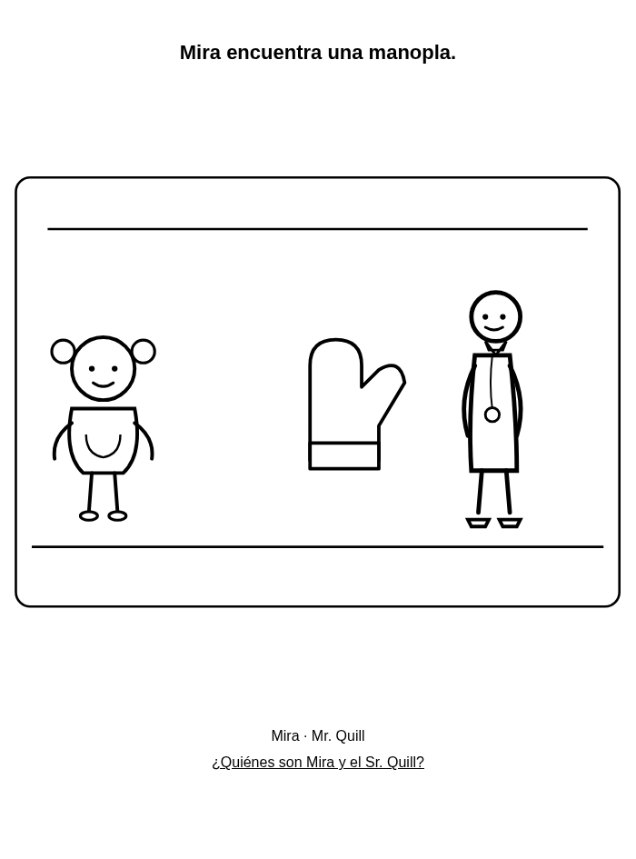
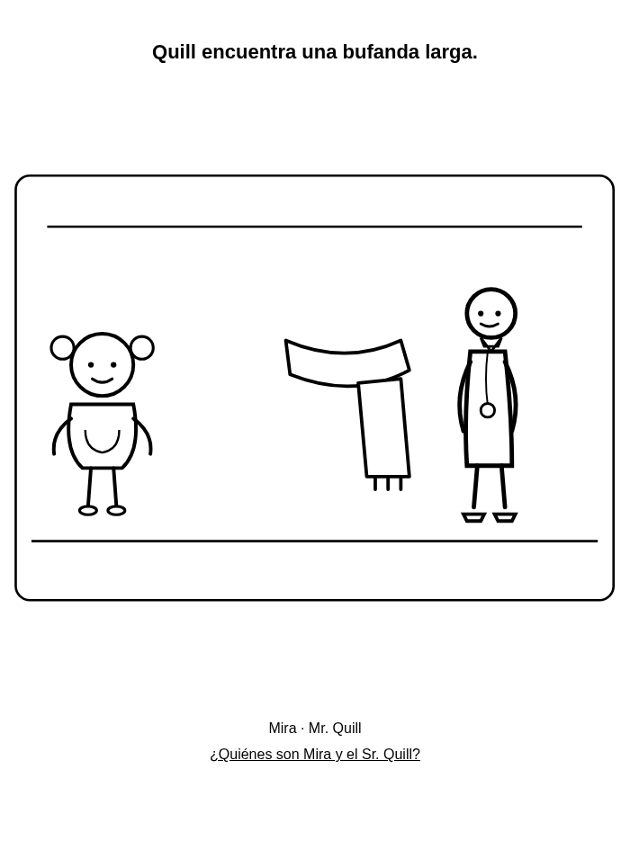
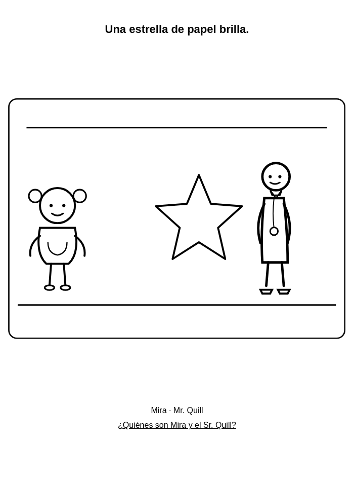
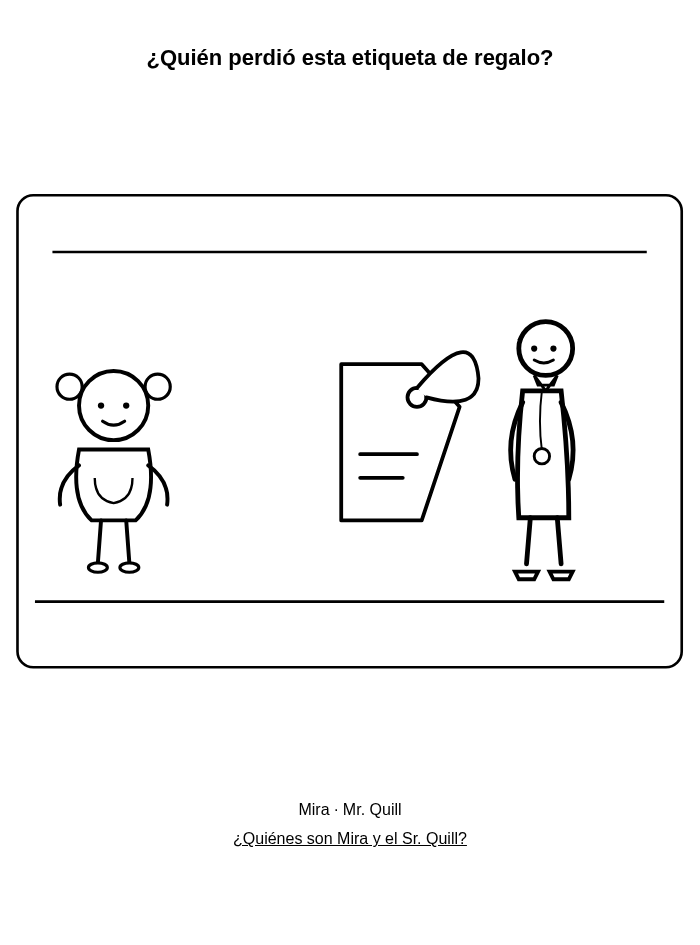
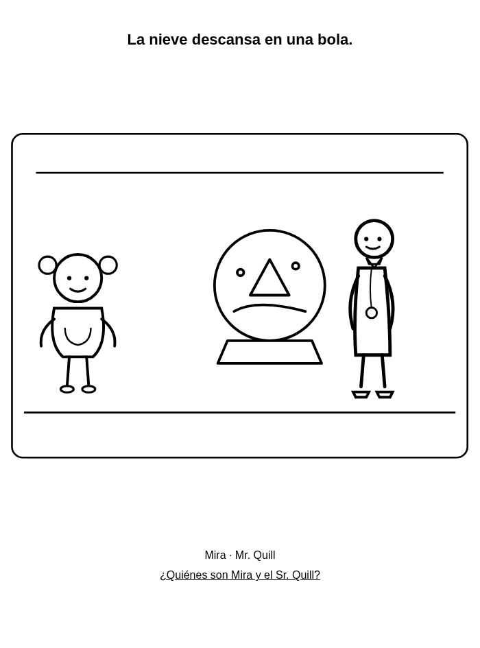
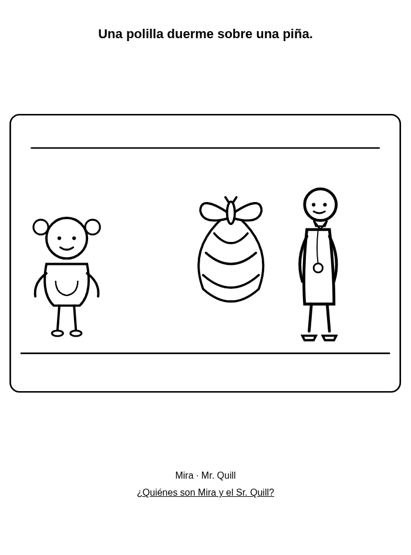

Dibujos de Navidad para colorear gratis – PDF para niños de 4 a 8 años
Seis dibujos de Navidad e invierno para colorear con Mira y el Sr. Quill. PDF gratis en A4 y carta para casa o clase.
Para familias y docentes: imprime al 100% en escala de grises. Usa ceras. Gratis para casa y clase.
Los 6 dibujos
A4 PDF · US Letter PDF





¿Quiénes son Mira y el Sr. Quill?
Mira es curiosa. El Sr. Quill la ayuda a ir despacio y mirar las cosas pequeñas. Vean juntos su dibujo animado gratis.
¿Quiénes son Mira y el Sr. Quill?